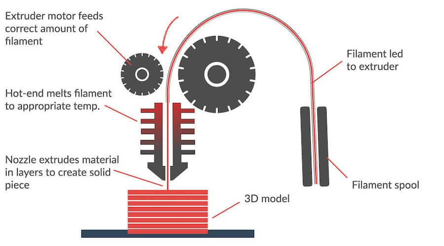
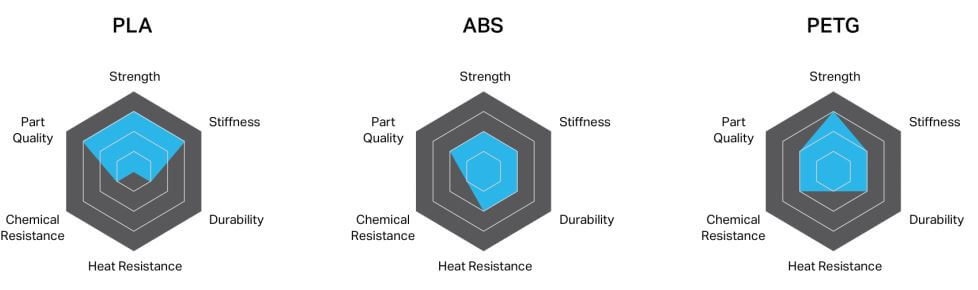
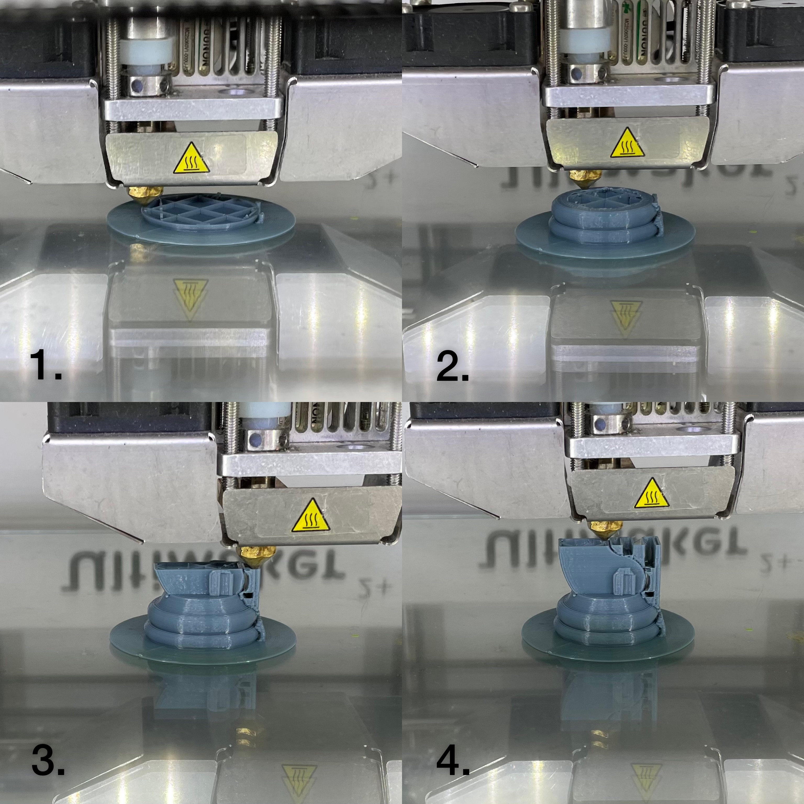

3D Printing
3D Printing is a process of making a physical object from a three-dimensional digital model. It brings digital CAD representation into physical form. 3D printing has gone beyond being an industrial prototyping and manufacturing process as it has become accessible to almost everyone. Main areas of use would be prototyping, specialised parts ( biomedical engineering, dental and aerospace) and hobbies. 3D Printing uses software that slices the 3D model into layers (0.01mm thick or less). Each layer is then traced onto the build plate by the printer. Once a layer is completed, the build plate is lowered and the next layer is added on top of the previous one.
There are 2 types of manufacturing techniques; ‘Additive manufacturing’ and ‘Subtractive Manufacturing’. 3D printing is known for ‘Additive manufacturing’.
‘Additive manufacturing’ is a method of adding material in successive patterns to create the desired shape of a part.
‘Subtractive Manufacturing’ is the process of removing material from a preformed block. E.g. Milling and Cutting. This method creates a lot of waste as the cut-off materials are mostly scraps.
| ADVANTAGES | DISADVANTAGES |
|---|---|
| 1. Flexible Design | 1. Restricted Sizes |
| 2. Rapid Prototyping | 2. Design Inaccuracies |
| 3. Minimal Wastage | 3. Reduction in Manufacturing Jobs |
| 4. Economical | |
| 5. Environmentally Friendly |
How does a 3D printer work?
The extruder motor would rotate towards each other so that the filament would slide into the nozzle. The nozzle would then melt the filament while creating each layer on the printer bed.
Types of Filament
Most common 3D printing filament used would be PLA, ABS and PET-G. PLA is a type of polyester made from fermented plant starch from corn, cassava, maize, sugarcane or sugar beet pulp. ABS is an opaque thermoplastic. PET-G is a thermoplastic polyester.
In summary, PLA is a low to medium strength filament given its low heat and chemical resistance. ABS is a medium to high strength filament as it will bend sooner than break. It also has a higher impact, heat, and chemical resistance than PLA. PETG is a medium to high strength filament.
Click here to read about every type of 3D printing filaments, as well as to understand the differences in each of them.
ASSIGNMENT
For the 3D printing assignment, I am to create a Knight chess piece in Fusion 360, and then 3D print it out.
Here's my Knight chess piece and a quick summary of how I did it:
1. Slide 1 shows the image I have chosen for reference.
2. Outlining the base of the chess piece.
3. Using the revolve feature to make the base 3D.
4. Outlining the rest of the chess piece.
5. Using the extrude feature for the horse.
6. Adding more details to the knight chess piece.
UltiMaker 2+
The 3D printer I am using would be the UltiMaker 2+. Here's some information about this printer:
.png)
CURA
Cura is an open source slicing application for 3D printers. Slicing 3D models means taking your design (.stl format) and slicing it into individual layers. The software then generates the tool path (.gcode) the printer will use for printing. Most slicing softwares will have a print preview function to help prevent print failures.

Slicing
Here is how I slice my Knight chess piece.
1. Export the 3D model from Fusion 360 into your computer.
2. Save it as an .stl file.
3. After downloading the CURA software, select Ultimaker 2+ as the printer.
4. I am changing the size of my Knight chess piece.
5. Set the layer height: 0.15, infill: 10%, support and adhesion. Layer height is the height of each layer. The shorter the height, the better the print. Infill means how filled the print would be. Supports are used to support parts of the 3D printed model when printing. They are easily removable. Adhesion is an additional larger base on the 3D printed model so that it will not shift/tilt when printing. Click Slice when done.
6. Go to PREVIEW to view how the final 3D model would look like.
7. Additionally, drag the button at the right up/down to see how each layer is being printed out. If everything is ok, save the gcode file and it's ready to be printed.
3D Printing:
After saving the gcode file into the UltiMaker 2+ SD card, we can insert the SD card into the printer and start printing.
